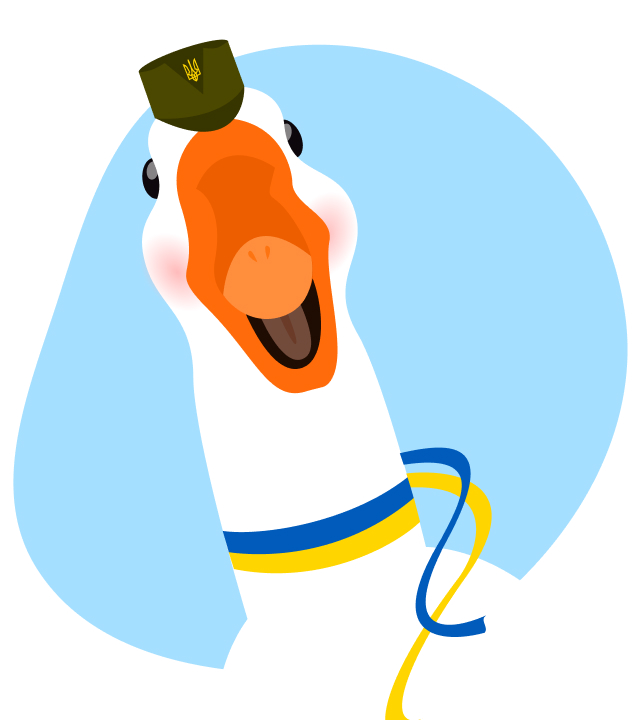

Бандерогусь
Доброго вечора, ми з України
На старт. Увага. Полетіли!
Спеціальний бойовий гусак із біолабораторій України. Пишаюся своїми подвигами, бороню Батьківщину та підтримую позитивний дух народу. Слава Україні!
Запустити гуся 
Цікаві факти про бандерогусей
Зазвичай бандерогуси — виключно мирні птахи. Але у разі небезпеки можуть атакувати ворога системою надпотужного озброєння. Також нищать психологічно, активуючи високочастотне шипіння та розмахування крилами
features
-

Система навігації
Супутниковий GPS та ехолокатори розпізнають ворожу техніку навіть на етапі збірки
-

Очі-тепловізори
Допомагають виявити характер сигнатури об’єктів та значно підвищують точність удару
-

Байракрила
Можуть нести 2-4 керовані ракети, що вражають ціль на відстані «ніхріна собі» кілометрів
Перемога завжди за нами!
Головна мета бандерогусей — служити гумору та доброті нашого народу. Ми забезпечимо вашу посмішку у часи, коли вона так необхідна